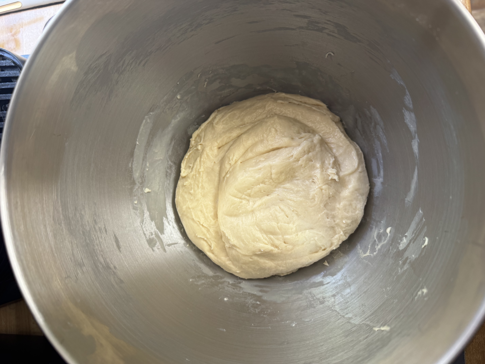
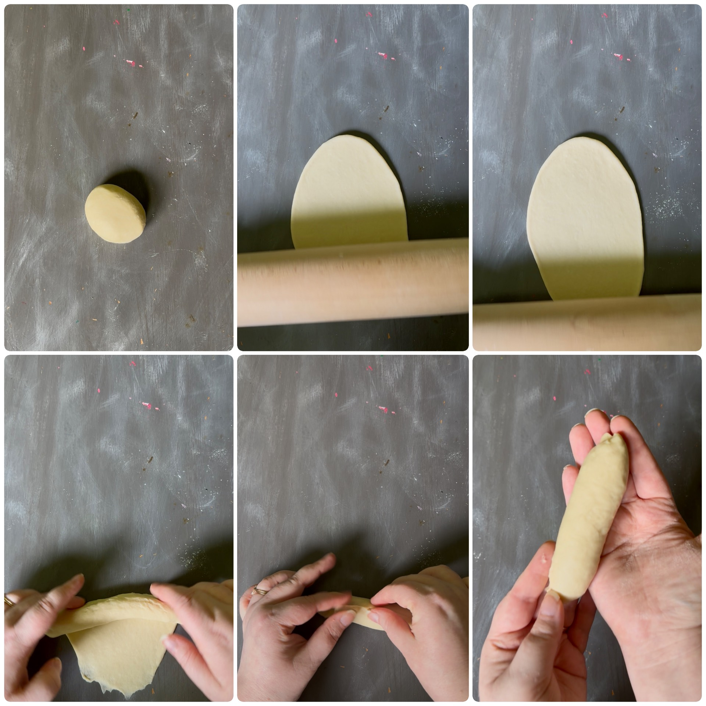
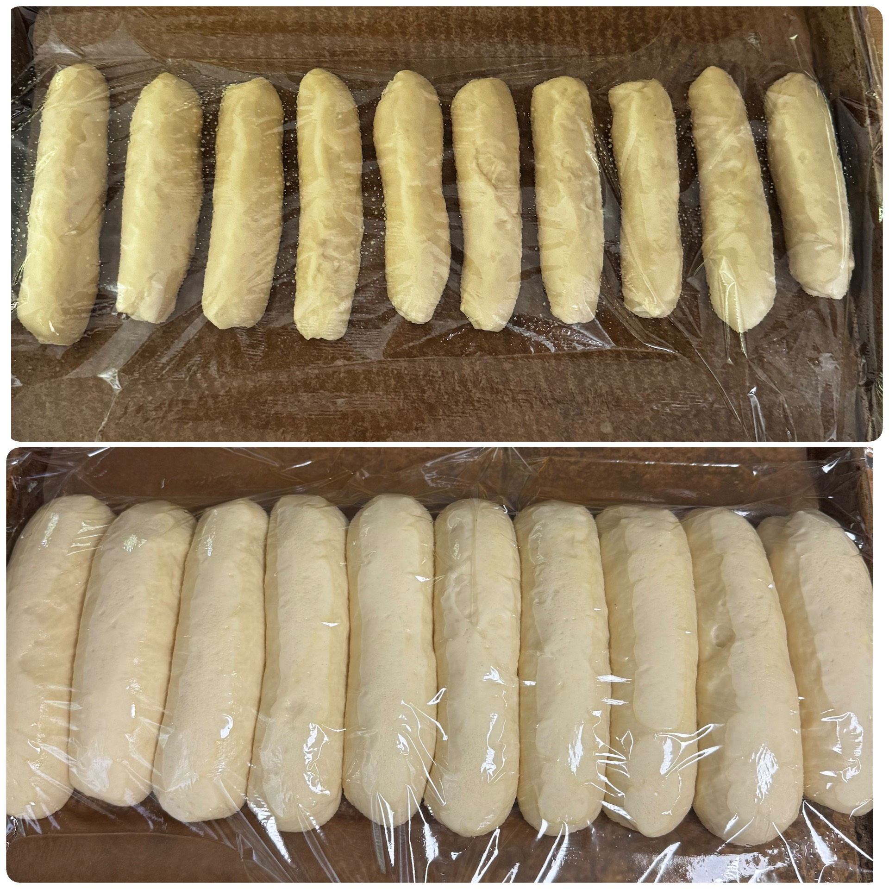
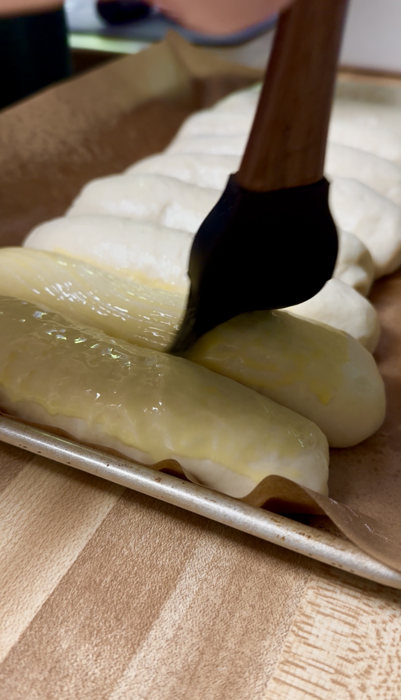
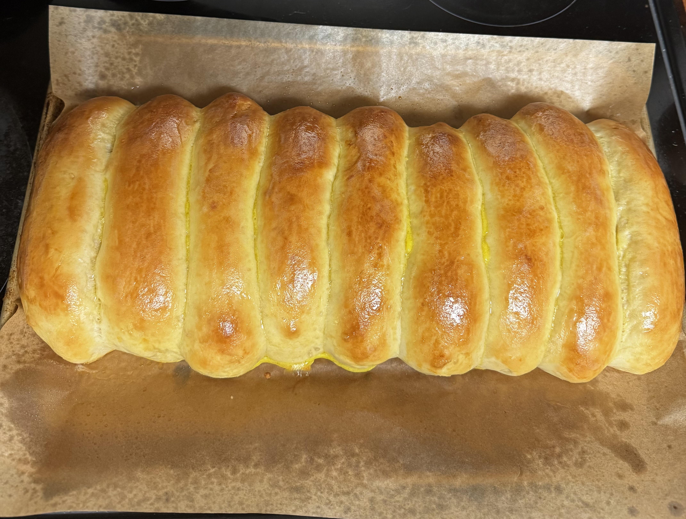
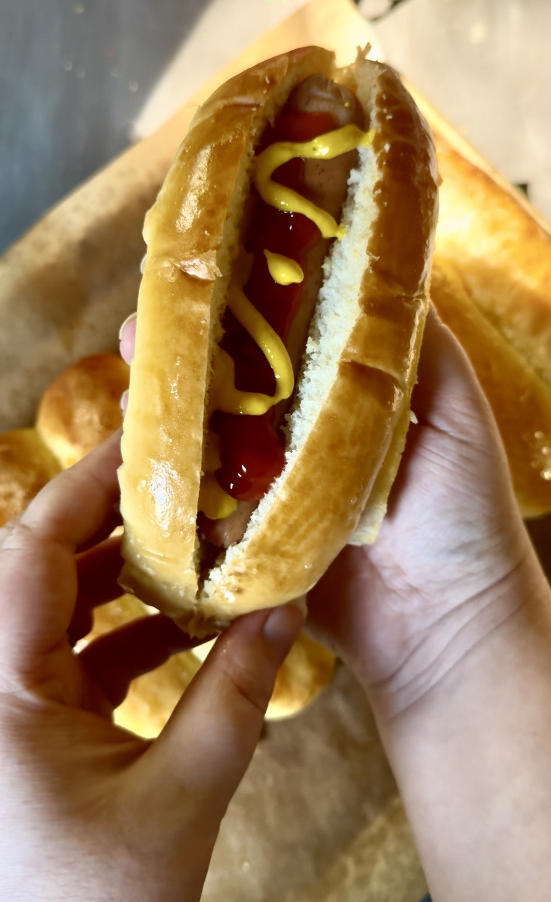

🌭 Soft Sourdough Discard Hot Dog Buns
Soft, fluffy homemade hot dog buns with a tender crumb and slightly sweet flavor. This recipe makes 10 buns.
🧾 Ingredients
- 345g all-purpose flour
- 123g warm water
- 150g sourdough discard
- 9g instant yeast
- 1 large egg
- 58g honey or granulated sugar
- 28g salted butter, softened
- 9g fine salt
- 1 egg yolk
- 1 tablespoon cream
🥣 Mix the Dough
Add everything except the butter to the bowl of a stand mixer:
- 345g flour
- 123g warm water
- 150g sourdough starter or discard
- 9g instant yeast
- 1 egg
- 58g honey or sugar
- 9g salt
Mix on low speed for about 2 minutes, until all of the flour is absorbed.
Increase the speed to medium (around speed 4) and mix for about 5 minutes, until the dough becomes smoother and begins developing strength.
Add the softened butter. Continue mixing on low-medium speed for another 3–5 minutes until the butter is fully incorporated and the dough becomes smooth again.

🌤️ Rest & Rise
Cover the dough and let it rest at room temperature for 1–2 hours, until it has doubled in size.
⚖️ Divide the Dough
Turn the dough out onto your work surface. Divide into 10 equal pieces (about 76g each). Shape each piece into a smooth ball.
🌭 Shape the Buns
Lightly flour your rolling pin to prevent sticking. Avoid adding too much flour to the dough.
Roll each dough ball into a rectangle. Roll the dough up tightly into a log. Pinch the seam and ends closed.

Place the buns seam-side down on a greased, parchment-lined baking sheet. Arrange them close together with a little space between each bun. As they rise, they will expand and eventually touch, creating soft pull-apart sides.
🧺 Final Proof
Cover the buns with plastic wrap lightly sprayed with oil to prevent sticking. Let rise for 1–2½ hours, until very puffy.
The buns should be noticeably larger and touching each other before baking.

🔥 Bake
Preheat the oven to 375°F (190°C).
Prepare the egg wash: 1 egg yolk and 1 tablespoon cream. Whisk together and brush gently over the tops of the buns.

Bake for 16–20 minutes, until golden brown.
🧈 Finish
Remove the buns from the oven and immediately brush the tops with butter. Let cool before serving.


Homemade buns are worth the extra effort. The dough may feel sticky while mixing, but that softness is what creates a fluffy, bakery style bun. 🤍